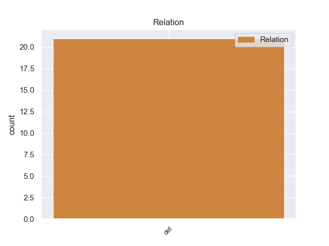
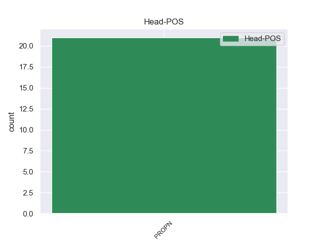
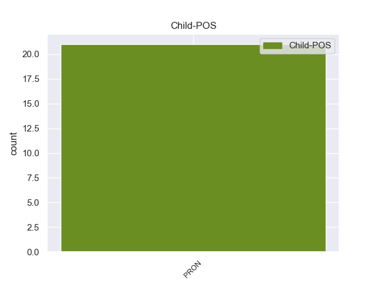

Distribution of features within this leaf



Morphosyntax Rules sorted by frequency.
- When the dependent token is the determiner(det) of the head token, and the head token is PROPN the Case needs to be Dat.
1 Ursula _ _ _ _ 0 _ _ _
2 K. _ _ _ _ 0 _ _ _
3 Le él PRON _ Case=Dat|Number=Sing|Person=3|PronType=Prs 4 det _ _
4 Guin guin PROPN _ _ 0 _ _ _
5 explora _ _ _ _ 0 _ _ _
6 la _ _ _ _ 0 _ _ _
7 sexualidad _ _ _ _ 0 _ _ _
8 transespecies _ _ _ _ 0 _ _ _
9 en _ _ _ _ 0 _ _ _
10 The _ _ _ _ 0 _ _ _
11 Left _ _ _ _ 0 _ _ _
12 Hand _ _ _ _ 0 _ _ _
13 of _ _ _ _ 0 _ _ _
14 Darkness _ _ _ _ 0 _ _ _
15 ( _ _ _ _ 0 _ _ _
16 1969 _ _ _ _ 0 _ _ _
17 ) _ _ _ _ 0 _ _ _
18 ; _ _ _ _ 0 _ _ _
non-conforming Examples:
1 Rasgos _ _ _ _ 0 _ _ _
2 industriales _ _ _ _ 0 _ _ _
3 ( _ _ _ _ 0 _ _ _
4 en _ _ _ _ 0 _ _ _
5 su _ _ _ _ 0 _ _ _
6 futurista _ _ _ _ 0 _ _ _
7 diseño _ _ _ _ 0 _ _ _
8 de _ _ _ _ 0 _ _ _
9 Piano _ _ _ _ 0 _ _ _
10 ) _ _ _ _ 0 _ _ _
11 y _ _ _ _ 0 _ _ _
12 lujo _ _ _ _ 0 _ _ _
13 cinco _ _ _ _ 0 _ _ _
14 estrellas _ _ _ _ 0 _ _ _
15 definen _ _ _ _ 0 _ _ _
16 el _ _ _ _ 0 _ _ _
17 estilo _ _ _ _ 0 _ _ _
18 de _ _ _ _ 0 _ _ _
19 el _ _ _ _ 0 _ _ _
20 nuevo _ _ _ _ 0 _ _ _
21 NH _ _ _ _ 0 _ _ _
22 Lingotto _ _ _ _ 0 _ _ _
23 Tech _ _ _ _ 0 _ _ _
24 , _ _ _ _ 0 _ _ _
25 un _ _ _ _ 0 _ _ _
26 establecimiento _ _ _ _ 0 _ _ _
27 de _ _ _ _ 0 _ _ _
28 vanguardia _ _ _ _ 0 _ _ _
29 que _ _ _ _ 0 _ _ _
30 incorpora _ _ _ _ 0 _ _ _
31 una _ _ _ _ 0 _ _ _
32 impresionante _ _ _ _ 0 _ _ _
33 área _ _ _ _ 0 _ _ _
34 de _ _ _ _ 0 _ _ _
35 boutiques _ _ _ _ 0 _ _ _
36 ( _ _ _ _ 0 _ _ _
37 la _ _ _ _ 0 _ _ _
38 llamada _ _ _ _ 0 _ _ _
39 " _ _ _ _ 0 _ _ _
40 Galería _ _ _ _ 0 _ _ _
41 Ocho _ _ _ _ 0 _ _ _
42 " _ _ _ _ 0 _ _ _
43 ) _ _ _ _ 0 _ _ _
44 , _ _ _ _ 0 _ _ _
45 sala _ _ _ _ 0 _ _ _
46 de _ _ _ _ 0 _ _ _
47 conciertos _ _ _ _ 0 _ _ _
48 y _ _ _ _ 0 _ _ _
49 una _ _ _ _ 0 _ _ _
50 galería _ _ _ _ 0 _ _ _
51 de _ _ _ _ 0 _ _ _
52 arte _ _ _ _ 0 _ _ _
53 proyectada _ _ _ _ 0 _ _ _
54 por _ _ _ _ 0 _ _ _
55 Piano _ _ _ _ 0 _ _ _
56 ( _ _ _ _ 0 _ _ _
57 Lo él PRON _ Case=Acc|Gender=Masc|Number=Sing|Person=3|PrepCase=Npr|PronType=Prs 58 det _ _
58 Scrigno scrigno PROPN _ Gender=Masc|Number=Sing 0 _ _ _
59 ) _ _ _ _ 0 _ _ _
60 . _ _ _ _ 0 _ _ _
1 Lo él PRON _ Case=Acc|Gender=Masc|Number=Sing|Person=3|PrepCase=Npr|PronType=Prs 2 det _ _
2 speziale speziale PROPN _ Number=Sing 0 _ _ _
3 , _ _ _ _ 0 _ _ _
4 tal _ _ _ _ 0 _ _ _
5 y _ _ _ _ 0 _ _ _
6 como _ _ _ _ 0 _ _ _
7 ha _ _ _ _ 0 _ _ _
8 pasado _ _ _ _ 0 _ _ _
9 con _ _ _ _ 0 _ _ _
10 las _ _ _ _ 0 _ _ _
11 otras _ _ _ _ 0 _ _ _
12 óperas _ _ _ _ 0 _ _ _
13 de _ _ _ _ 0 _ _ _
14 Haydn _ _ _ _ 0 _ _ _
15 no _ _ _ _ 0 _ _ _
16 es _ _ _ _ 0 _ _ _
17 muy _ _ _ _ 0 _ _ _
18 conocida _ _ _ _ 0 _ _ _
19 y _ _ _ _ 0 _ _ _
20 se _ _ _ _ 0 _ _ _
21 ha _ _ _ _ 0 _ _ _
22 representado _ _ _ _ 0 _ _ _
23 en _ _ _ _ 0 _ _ _
24 muy _ _ _ _ 0 _ _ _
25 pocas _ _ _ _ 0 _ _ _
26 ocasiones _ _ _ _ 0 _ _ _
27 . _ _ _ _ 0 _ _ _
1 La _ _ _ _ 0 _ _ _
2 Sala _ _ _ _ 0 _ _ _
3 de _ _ _ _ 0 _ _ _
4 lo él PRON _ Case=Acc|Gender=Masc|Number=Sing|Person=3|PrepCase=Npr|PronType=Prs 5 det _ _
5 Penal penal PROPN _ _ 0 _ _ _
6 de _ _ _ _ 0 _ _ _
7 el _ _ _ _ 0 _ _ _
8 TS _ _ _ _ 0 _ _ _
9 acordó _ _ _ _ 0 _ _ _
10 así _ _ _ _ 0 _ _ _
11 , _ _ _ _ 0 _ _ _
12 por _ _ _ _ 0 _ _ _
13 unanimidad _ _ _ _ 0 _ _ _
14 , _ _ _ _ 0 _ _ _
15 devolver _ _ _ _ 0 _ _ _
16 las _ _ _ _ 0 _ _ _
17 actuaciones _ _ _ _ 0 _ _ _
18 a _ _ _ _ 0 _ _ _
19 Flors _ _ _ _ 0 _ _ _
20 para _ _ _ _ 0 _ _ _
21 que _ _ _ _ 0 _ _ _
22 siga _ _ _ _ 0 _ _ _
23 investigando _ _ _ _ 0 _ _ _
24 a _ _ _ _ 0 _ _ _
25 Camps _ _ _ _ 0 _ _ _
26 , _ _ _ _ 0 _ _ _
27 Costa _ _ _ _ 0 _ _ _
28 , _ _ _ _ 0 _ _ _
29 Campos _ _ _ _ 0 _ _ _
30 y _ _ _ _ 0 _ _ _
31 Betoret _ _ _ _ 0 _ _ _
32 a _ _ _ _ 0 _ _ _
33 el _ _ _ _ 0 _ _ _
34 considerar _ _ _ _ 0 _ _ _
35 que _ _ _ _ 0 _ _ _
36 los _ _ _ _ 0 _ _ _
37 trajes _ _ _ _ 0 _ _ _
38 y _ _ _ _ 0 _ _ _
39 regalos _ _ _ _ 0 _ _ _
40 que _ _ _ _ 0 _ _ _
41 el _ _ _ _ 0 _ _ _
42 president _ _ _ _ 0 _ _ _
43 aceptó _ _ _ _ 0 _ _ _
44 supuestamente _ _ _ _ 0 _ _ _
45 " _ _ _ _ 0 _ _ _
46 de _ _ _ _ 0 _ _ _
47 forma _ _ _ _ 0 _ _ _
48 repetida _ _ _ _ 0 _ _ _
49 " _ _ _ _ 0 _ _ _
50 de _ _ _ _ 0 _ _ _
51 la _ _ _ _ 0 _ _ _
52 empresa _ _ _ _ 0 _ _ _
53 Orange _ _ _ _ 0 _ _ _
54 Market _ _ _ _ 0 _ _ _
55 - _ _ _ _ 0 _ _ _
56 dirigida _ _ _ _ 0 _ _ _
57 por _ _ _ _ 0 _ _ _
58 Álvaro _ _ _ _ 0 _ _ _
59 Pérez _ _ _ _ 0 _ _ _
60 " _ _ _ _ 0 _ _ _
61 El _ _ _ _ 0 _ _ _
62 Bigotes _ _ _ _ 0 _ _ _
63 " _ _ _ _ 0 _ _ _
64 , _ _ _ _ 0 _ _ _
65 considerado _ _ _ _ 0 _ _ _
66 responsable _ _ _ _ 0 _ _ _
67 de _ _ _ _ 0 _ _ _
68 la _ _ _ _ 0 _ _ _
69 red _ _ _ _ 0 _ _ _
70 " _ _ _ _ 0 _ _ _
71 Gürtel _ _ _ _ 0 _ _ _
72 " _ _ _ _ 0 _ _ _
73 en _ _ _ _ 0 _ _ _
74 Valencia _ _ _ _ 0 _ _ _
75 - _ _ _ _ 0 _ _ _
76 , _ _ _ _ 0 _ _ _
77 pueden _ _ _ _ 0 _ _ _
78 constituir _ _ _ _ 0 _ _ _
79 un _ _ _ _ 0 _ _ _
80 delito _ _ _ _ 0 _ _ _
81 de _ _ _ _ 0 _ _ _
82 cohecho _ _ _ _ 0 _ _ _
83 impropio _ _ _ _ 0 _ _ _
84 . _ _ _ _ 0 _ _ _
1 la _ _ _ _ 0 _ _ _
2 Cámara _ _ _ _ 0 _ _ _
3 de _ _ _ _ 0 _ _ _
4 Apelaciones _ _ _ _ 0 _ _ _
5 en _ _ _ _ 0 _ _ _
6 lo él PRON _ Case=Acc|Gender=Masc|Number=Sing|Person=3|PrepCase=Npr|PronType=Prs 7 det _ _
7 Penal penal PROPN _ _ 0 _ _ _
8 , _ _ _ _ 0 _ _ _
9 el _ _ _ _ 0 _ _ _
10 Servicio _ _ _ _ 0 _ _ _
11 Público _ _ _ _ 0 _ _ _
12 de _ _ _ _ 0 _ _ _
13 la _ _ _ _ 0 _ _ _
14 Defensa _ _ _ _ 0 _ _ _
15 Penal _ _ _ _ 0 _ _ _
16 , _ _ _ _ 0 _ _ _
17 el _ _ _ _ 0 _ _ _
18 nuevo _ _ _ _ 0 _ _ _
19 Ministerio _ _ _ _ 0 _ _ _
20 Público _ _ _ _ 0 _ _ _
21 , _ _ _ _ 0 _ _ _
22 la _ _ _ _ 0 _ _ _
23 Alcaidía _ _ _ _ 0 _ _ _
24 con _ _ _ _ 0 _ _ _
25 cámara _ _ _ _ 0 _ _ _
26 Gessell _ _ _ _ 0 _ _ _
27 ( _ _ _ _ 0 _ _ _
28 habitación _ _ _ _ 0 _ _ _
29 acondicionada _ _ _ _ 0 _ _ _
30 para _ _ _ _ 0 _ _ _
31 permitir _ _ _ _ 0 _ _ _
32 la _ _ _ _ 0 _ _ _
33 observación _ _ _ _ 0 _ _ _
34 con _ _ _ _ 0 _ _ _
35 personas _ _ _ _ 0 _ _ _
36 ) _ _ _ _ 0 _ _ _
37 y _ _ _ _ 0 _ _ _
38 la _ _ _ _ 0 _ _ _
39 sala _ _ _ _ 0 _ _ _
40 de _ _ _ _ 0 _ _ _
41 reconocimiento _ _ _ _ 0 _ _ _
42 . _ _ _ _ 0 _ _ _